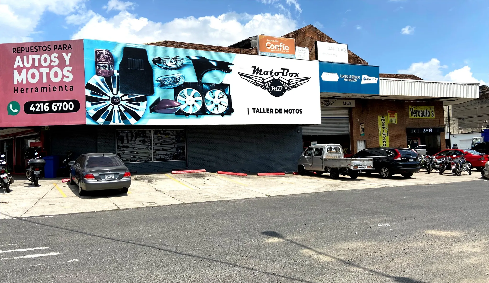
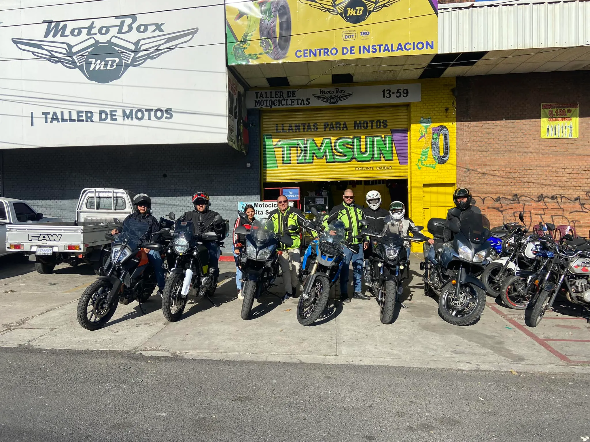

TODO PARA
TU MOTO.
Repuestos, accesorios y herramientas con atención directa. Y cuando toca meter mano, MotoBox está a la par: nuestro taller hermano para mantener tu moto lista para seguir rodando.

Algunos productos
Estas fichas son demostrativas y están listas para reemplazarse con las fotografías y datos reales del inventario.
Ver catálogo completo
MOTOBOX.
MANOS QUE CONOCEN MOTOS.
Un taller cercano, práctico y respaldado por la experiencia de trabajar todos los días con motociclistas. Desde mantenimiento preventivo hasta instalaciones y revisiones.
DE CAMINO
TRADICIÓN SIN QUEDARNOS QUIETOS.
Mayen V Petapa nació como un negocio de repuestos y herramientas y ha crecido junto a sus clientes. Hoy la tienda convive con MotoBox, ampliando la atención desde el repuesto hasta el servicio.
Esta historia es un texto base para que luego puedan reemplazarla con los datos y momentos reales de la empresa.
Conoce nuestra historia